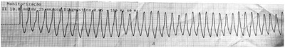

Questão 1 · Medicina Preventiva · 4000182668Sobre a Medicina Baseada em Evidências – MBE, é correto afirmar que
A são considerados paradigmas do médico tradicional: 1 – experiência clínica individual; 2 – compreensão da fisiopatologia e 3 – compreensão das regras de evidências.
B são considerados paradigmas da MBE: 1 – informações provenientes de estudos sistemáticos, reprodutíveis e sem tendenciosidade; 2 – compreensão da fisiopatologia, necessária mas insuficiente e 3 – compreensão de regras de evidências para saber aplicar de forma efetiva a literatura.
C são considerados paradigmas da MBE: 1 – experiência clínica individual e compreensão da fisiopatologia; 2 – Estudos com tendenciosidade limitada; 3 – compreensão de regras de evidências para saber aplicar de forma efetiva a literatura.
D são considerados paradigmas da medicina tradicional: 1 – experiência clínica individual e compreensão da fisiopatologia; 2 – Estudos com tendenciosidade limitada; 3 – compreensão de regras de evidências para saber aplicar de forma efetiva a literatura.
E são considerados paradigmas da medicina tradicional: 1 – informações provenientes de estudos sistemáticos, reprodutíveis e sem tendenciosidade; 2 – compreensão da fisiopatologia, necessária mas insuficiente e 3 – compreensão de regras de evidências para saber aplicar de forma efetiva a literatura.
Questão 2 · Medicina Preventiva · 4000182667São exemplos de medidas para avaliação do tratamento em epidemiologia clínica:
A a redução do risco relativo – RRR, a redução do risco absoluto – RRA, o número necessário para tratar – NNT.
B a mortalidade, a letalidade, a incidência.
C o prognóstico, a taxa de sobrevida em 5 anos, recorrência.
D a mortalidade, o prognóstico, o número necessário para tratar – NNT.
E a redução do risco relativo – RRR, a redução da taxa de sobrevida – RTS, a redução do tempo de interstício – RTI.
Questão 3 · Medicina Preventiva · 4000182666Para situações de investigação clínica em que é estabelecido que não é possível a realização de estudos experimentais por questões éticas, a análise de causa e risco na epidemiologia deve ser realizada por meio de
A ensaios clínicos randomizados.
B estudos transversais.
C ensaios comunitários.
D ensaios críticos.
E estudos de coorte.
Questão 4 · Medicina Preventiva · 4000182665No estudo da epidemiologia clínica, entende-se como associações reversíveis:
A situações em que o potencial fator de risco é retirado e há aumento na incidência do evento. O fator de risco é então revertido a fator de proteção.
B após retirada de fator de risco há redução de incidência de um evento – há redução do evento com a redução da exposição, o que é sugestivo de causalidade, que deve ser investigada em estudos complementares.
C após retirada de fator de risco há redução de incidência de um evento, então há redução do evento com a redução da exposição, estabelecendo-se inferência causal do fator de risco estudado, compatível com evidência de estudos clínicos.
D situações em que o potencial fator de risco é retirado e há redução na incidência do evento. O fator de risco é então considerado fator causador do evento, consistente com evidências do tipo I.
E após observação de fator de risco há aumento de incidência de um evento, estabelecendo-se inferência causal do fator de risco estudado como o evento de desfecho observado.
Questão 5 · Medicina Preventiva · 4000182664Em uma unidade de pronto atendimento pediátrica, uma criança de 11 anos é atendida e, ao exame físico, suspeita-se de faringite. O pediatra, após realizar oroscopia e exame físico, ca em dúvida acerca da conduta de antibioticoterapia, solicita avaliação de colega mais experiente que, ao receber a negativa da criança para abrir a boca para oroscopia, se negou a prosseguir com a avaliação e liberou a criança e seu acompanhante. Sobre esse caso, é correto afirmar que
A a conduta está correta, uma vez que, considerando o uso racional de medicamentos, não se prescreve terapia medicamentosa caso o exame físico seja impossibilitado.
B se trata de conflito ético do exercício da medicina, uma vez que a atitude do profissional foi inadequada e a criança não recebeu o atendimento de que precisava.
C ambos os médicos devem registrar em prontuário a recusa de tratamento.
D deve ser anexado ao prontuário prescrição medicamentosa, após discussão de caso entre os profissionais, que será entregue à família em caso de retorno.
E se trata de respeito à ética médica, uma vez que foi preservada a autonomia da criança, que não desejava ser examinada.
Questão 6 · Medicina Preventiva · 4000182663Em uma Unidade Básica de Saúde, OMP, 25 anos, gênero feminino, apresenta queixa de sintomas respiratórios, cefaleia, ao exame observa-se tosse, dor e pressão facial, congestão nasal, secreção nasal e retronasal. Os sintomas iniciaram há 3 dias. Refere não possuir diagnóstico de doenças de base, nem alergias. Apresenta ausculta pulmonar sem alterações. A terapia medicamentosa mais indicada para esse caso é
A solução salina para lavagem nasal, analgésicos, penicilina benzatina intramuscular uma dose, que deve ser repetida na semana seguinte caso os sintomas persistam.
B tratamento oral com penicilina por 10 dias completos.
C solução salina para lavagem nasal, analgésicos, uso de mucolíticos para tornar a secreção menos espessa e reduzir o gotejamento pós nasal e azitromicina 500 mg ao dia por 3 dias.
D solução salina para lavagem nasal, analgésicos, uso de mucolíticos para tornar a secreção menos espessa e reduzir o gotejamento pós nasal, e fluoroquinolonas como o ciprofloxacino 500 mg de 12 em 12 horas por 7 dias.
E solução salina para lavagem nasal e analgésicos para controle de sintomas, que pode ser acompanhada de glicocorticoides tópicos para diminuir inflamação da mucosa e drenar melhor os seios da face.
Questão 7 · Medicina Preventiva · 4000182662Sobre o nanciamento do Sistema Único de Saúde (SUS), os percentuais de investimento nanceiro dos municípios, estados e União são definidos atualmente pela Lei Complementar nº 141, de 13 de janeiro de 2012, resultante da sanção presidencial da Emenda Constitucional 29. Sobre o financiamento previsto em tal legislação, é correto afirmar que
A a União destina 20% das receitas correntes brutas para a saúde pública brasileira, o que foi consolidado com a sanção da Lei Complementar nº 141.
B municípios e Distrito Federal devem aplicar anualmente, no mínimo, 30% da arrecadação dos impostos em ações e serviços públicos de saúde, os estados 35% e a União 20%.
C municípios e Distrito Federal devem aplicar anualmente, no mínimo, 15% da arrecadação dos impostos em ações e serviços públicos de saúde cabendo aos estados 12%. A União aplica no mínimo o valor empenhado no exercício financeiro anterior, acrescido do percentual relativo à variação do Produto Interno Bruto (PIB) do ano antecedente ao da lei orçamentária anual.
D municípios e Distrito Federal devem aplicar, anualmente, no mínimo, 30% da arrecadação dos impostos em ações e serviços públicos de saúde cabendo aos estados 40%. A União aplica o valor empenhado no exercício financeiro anterior, acrescido do percentual relativo à variação da inflação.
E municípios e Distrito Federal devem aplicar anualmente, no máximo, 20% da arrecadação dos impostos em ações e serviços públicos de saúde cabendo o máximo de 30% aos estados. A União aplica o valor empenhado no exercício financeiro anterior, acrescido do percentual relativo à variação da inflação.
Questão 8 · Medicina Preventiva · 4000182661Sobre os níveis de atenção no Sistema Único de Saúde – SUS, é correto afirmar que
A são divididos entre Atenção básica e atenção hospitalar. Na atenção básica, atuam profissionais generalistas e, na hospitalar, profissionais especialistas.
B na perspectiva hierárquica da atenção à saúde, o nível secundário envolve atividades e profissionais especializados ou equipamentos especializados, que são voltados à necessidades específicas da população.
C a atenção terciária é oferecida exclusivamente em hospitais terciários que realizam transplantes.
D a maior parte dos problemas de saúde da população deve ser manejada em serviços secundários, especializados, que oferecem à população um acolhimento específico às suas necessidades.
E são representados por uma pirâmide, na qual a base é a atenção terciária, mais complexa, no intermédio encontramos a atenção secundária, especializada, e no topo, e mais importante, a atenção primária.
Questão 9 · Medicina Preventiva · 4000182660JAN, 19 anos, gestante com Idade Gestacional aproximada de 13 semanas, possui VDRL positivo para sem registro de tratamento anterior, JAN nega ter sido diagnosticada anteriormente. Sobre a notificação dessa doença, é correto afirmar que deve ser notificada como
A sífilis adquirida em até 24 horas.
B toxoplasmose gestacional em relatório semanal.
C doença de chagas crônica em até 24 horas.
D sífilis em gestante em relatório semanal.
E toxoplasmose gestacional em até 24 horas.
Questão 10 · Medicina Preventiva · 4000182659ASP, 59 anos, tem como desfecho o óbito por doença classificada pela Classi cação Internacional de Doenças CID-10 como A90 – Dengue. Sobre a notificação deste desfecho da doença, é correto afirmar que deve ser notificada
A ao Ministério da Saúde e Secretaria Estadual de Saúde em até 24 horas, e à Secretaria Municipal de Saúde no relatório semanal.
B ao Ministério da Saúde, Secretaria Estadual de Saúde e Secretaria Municipal de Saúde no relatório semanal.
C ao Ministério da Saúde, Secretaria Estadual de Saúde e Secretaria Municipal de Saúde em até 72 horas.
D ao Ministério da Saúde, Secretaria Estadual de Saúde e Secretaria Municipal de Saúde em até 24 horas.
E apenas à Secretaria Municipal de Saúde em até 24 horas.
Questão 11 · Medicina Preventiva · 4000182658Em um pequeno município do estado de São Paulo, EF, 70 anos, aguarda a alocação de vaga para a realização de hemodiálise ambulatorial. Por falta de infraestrutura em seu município de origem, EF é encaminhado para município vizinho para a realização do procedimento, como parte de um convênio de saúde, que promove a articulação a serviços de saúde de determinadas regiões. Essa estratégia pode ser descrita como
A respeito ao princípio da Participação Social do SUS, dado que todo indivíduo tem direito a participar do tratamento mais adequado e custo-efetivo para sua doença ou agravo à Saúde.
B expressão do princípio da Regionalização do SUS, uma vez que as estratégias e cuidados em saúde devem funcionar de forma articulada entre serviços de saúde, priorizando que todo cidadão receba o cuidado de que necessita.
C um acordo extraoficial das secretarias de saúde, que prejudica a regulação dos serviços de saúde, uma vez que cada município deve ser autosuficiente para garantir os direitos de seus munícipes.
D desafio para o Sistema Único de Saúde, pois fragiliza o princípio da hierarquização das decisões em saúde, ao parcelar o cuidado do usuário em diversos municípios.
E um acordo entre os conselhos gestores dos serviços de saúde, que devem prioritariamente atender à necessidade do munícipe e, posteriormente, acionar o ministério público para a garantia de cuidado integral ao usuário dentro de seu próprio município.
Questão 12 · Medicina Preventiva · 4000182657A Política Nacional de Vigilância em Saúde (PNVS), estabelecida por meio da Resolução no 588/2018 do Conselho Nacional de Saúde (CNS), prevê a garantia do direito das pessoas e da sociedade às informações geradas pela Vigilância em Saúde, respeitadas as limitações éticas e legais. Dentro dessa política, tal garantia se define como
A uma das ações estratégicas da política.
B um dos pilares da vigilância sanitária.
C um dos princípios da política.
D uma das diretrizes da vigilância epidemiológica.
E uma prática baseada em evidências.
Questão 13 · Medicina Preventiva · 4000182656No dia 12 de junho de 2018 foi instituída a Política Nacional de Vigilância em Saúde (PNVS), por meio da Resolução nº 588/2018 do Conselho Nacional de Saúde (CNS). A PNVS é um documento norteador do planejamento das ações de vigilância em saúde nas três esferas de gestão do SUS, caracterizado pela definição das responsabilidades, princípios, diretrizes e estratégias dessa vigilância. De acordo com a PNVS, define-se como “Vigilância em Saúde Ambiental”
A o conjunto de ações e serviços que propiciam o conhecimento e a detecção de mudanças nos fatores determinantes e condicionantes do meio ambiente que interferem na saúde humana, com a finalidade de recomendar e adotar medidas de promoção à saúde, prevenção e monitoramento dos fatores de riscos relacionados às doenças ou agravos à saúde.
B os processos geradores quanto às características das populações e territórios que possuem maiores dificuldades em absorver os impactos decorrentes de diferentes e variados graus de eventos de risco.
C um conjunto articulado de ações e serviços preventivos e curativos, individuais e coletivos, exigidos para cada caso em todos os níveis de complexidade do sistema.
D acesso às ações, serviços e produtos seguros e eficazes, indispensáveis para as necessidades de saúde da população, objetivando promover a qualidade de vida e reduzir a vulnerabilidade e os riscos à saúde relacionados aos seus determinantes e condicionantes.
E o processo de controle e publicação de indicadores que controlam a ocorrência de evento adverso ou inesperado, que cause doença, danos à saúde ou morte em um ou mais membros da população, em determinado lugar, num dado período de tempo.
Questão 14 · Medicina Preventiva · 4000182655De acordo com o “Manual de Planejamento no SUS”, de 2016, é correto afirmar que
A cabe às três esferas (Serviço de saúde, indivíduo e família), de maneira conjunta, definir mecanismos de controle e avaliação dos serviços de saúde, monitorar o nível de saúde da população, elaborar normas para regular a contratação de serviços privados.
B de forma específica, cabe à União as atribuições de natureza estratégica para o desenvolvimento da política de saúde, tais como formular, apoiar a implementação e avaliar políticas prioritárias, em âmbito nacional.
C cabe ao município coordenar sistemas de alta complexidade, de laboratórios de saúde pública e de vigilância epidemiológica e sanitária.
D cabe ao serviço de saúde formular e participar da execução da política nacional de produção de insumos e equipamentos para a saúde.
E cabe aos estados gerenciar as unidades públicas de saúde e implementar a política de insumos e equipamentos em saúde.
Questão 15 · Medicina Preventiva · 4000182654Sobre o “coeficiente de mortalidade infantil”, assinale a alternativa que descreve corretamente como deve ser calculado.
A (Número de óbitos de menores de 28 dias em certa área durante o ano/Total de nascidos vivos nessa área durante o ano) X 1 000.
B (Número de óbitos de menores de 12 anos em certa área durante o ano/Total de nascidos vivos nessa área durante os últimos 12 anos) X 1000.
C (Total de óbito de menores de 18 anos em certa área durante o ano/Total de nascidos vivos nessa área durante os últimos 12 anos) X 1000.
D (Total de perdas fetais de 22 semanas de gestação ou mais durante o ano/Total de nascidos vivos nessa área durante os últimos 12 anos) X 1000.
E (Número de óbitos de menores de 1 ano em certa área durante o ano/Total de nascidos vivos nessa área durante os últimos 12 anos) X 1000.
Questão 16 · Medicina Preventiva · 4000182653De acordo com a epidemiologia descritiva, consideram-se, para a análise e manejo de doenças e agravos, as variáveis relacionadas com o tempo, lugar e pessoa (onde, quando e quem) é atingido ou acometido por determinada doença/agravo. São exemplos de tais variáveis:
A tempo: tempo de incubação de uma doença. Lugar: espaço geográfico de preocupação. Pessoa: Raça/cor, idade, gênero e sexo.
B tempo: tempo de incubação de uma doença. Lugar: local de nascimento do paciente acometido. Pessoa: Expectativa de vida.
C tempo: Idade do paciente. Lugar: local de nascimento do paciente acometido. Pessoa: Expectativa de vida.
D tempo: Idade do paciente. Lugar: grupo etário ao qual o paciente pertence. Pessoa: renda média no país em que a pessoa vive.
E tempo: variações climáticas no local de residência do paciente. Lugar: espaço geográfico de preocupação. Pessoa: renda média no país em que a pessoa vive.
Questão 17 · Medicina Preventiva · 4000182652De acordo com a Portaria nº 2.528 de 19 de outubro de 2006, estão previstas na Política Nacional de Saúde da Pessoa Idosa as diretrizes:
A promoção do envelhecimento ativo e saudável e cuidado parcelado em diversos serviços de saúde da rede de atenção à saúde da pessoa idosa.
B estímulo às ações intersetoriais, visando à redução de custos para o setor da saúde.
C inauguração, nos próximos 20 anos, de hospitais dia do idoso, serviço que deve fornecer cuidado integral à população idosa em um só local, facilitando a acessibilidade.
D provimento de recursos capazes de assegurar qualidade da atenção à saúde da pessoa idosa e estímulo à participação e fortalecimento do controle social.
E estímulo à formação de cuidadores de idosos pelos centros de saúde, para qualificação da população para acolhimento integral das necessidades da pessoa idosa.
Questão 18 · Medicina Preventiva · 4000182651Em 1992, Dahlgren e Whitehead sistematizaram o conjunto de determinações do processo saúde/doença ou saúde/adoecimento a partir do paradigma da promoção da saúde e, no caso brasileiro, associada à perspectiva da mudança social e da redução das iniquidades. Considerando o caso de AJM, gênero masculino, ajudante de pedreiro, 65 anos de idade, recentemente diagnosticado com Hipertensão Arterial Sistêmica – HAS, dentro da perspectiva dos determinantes sociais do processo saúde/doença e de acordo com as estratégias do Sistema Único de Saúde – SUS para o cuidado da pessoa com doença crônica, é correto afirmar que
A considerando os determinantes distais, é necessário foco nas questões de estilo de vida de AJM. Ele mantém-se ativo na terceira idade, possui relações formais de confiança em seu trabalho, que potencializa as suas trocas sociais e produzem um envelhecimento saudável e autônomo.
B a vulnerabilidade social de AJM, evidenciada por ser trabalhador em profissão potencialmente insalubre já na terceira idade provavelmente causará exposição a condições de trabalho, alimentação e estilo de vida que agravarão o seu processo saúde-doença. Ex: exposição a ultraprocessados, trabalho estressante, dificuldades de acesso ao serviço de saúde.
C os profissionais de saúde devem valorizar o estilo de vida ativo de AJM, o que é um potencial de fortalecimento relacionado à HAS, e recomendar que as suas condições de trabalho, que são determinantes distais do processo saúde-doença, sejam valorizadas e estimuladas como forma de participação social.
D as desigualdades e iniquidades são determinantes sociais importantes no processo saúde-doença. Apesar de afetar as questões de saúde, como podemos avaliar no caso de AJM, as preocupações sociais são de responsabilidade e garantia do estado, e não fazem parte do projeto terapêutico dos usuários.
E são necessárias, para o cuidado de AJM e de usuários com processo saúde-doença semelhante, ações diretas dos serviços de saúde nos determinantes distais, determinantes políticos, determinantes sistêmicos e determinantes proximais que intensificam a expressão do adoecimento.
Questão 19 · Medicina Preventiva · 4000182650A participação social é também denominada “participação comunitária” no contexto da saúde, sendo estabelecida e regulada pela Lei nº 8.142/90. No âmbito desta lei, sobre a participação social, é correto a rmar que compõe o Conselho de Saúde
A os participantes das conferências estaduais de saúde, do conselho de segurança municipal, todo o conselho nacional de ministros do governo federal e a representantes da comissão nacional de direitos do usuário.
B os participantes das conferências distritais de saúde, todo o conselho nacional de secretários municipais de saúde, um terço dos membros do conselho nacional sanitário e a comissão nacional de direitos do usuário.
C a conferência de saúde e o conselho de saúde, do qual fazem parte representantes do conselho nacional de secretários de saúde e do conselho nacional de secretários municipais de saúde, bem como usuários dos serviços.
D os participantes das conferências distritais de saúde, todo o conselho nacional de secretários municipais de saúde, todo o conselho nacional de ministros do governo federal e a representantes da comissão nacional de direitos do usuário.
E as conferências distritais de saúde, das quais fazem parte representantes do conselho nacional de secretários de saúde e do conselho nacional de secretários municipais de saúde, bem como usuários dos serviços.
Questão 20 · Medicina Preventiva · 4000182649Considerando a Lei no 8.080/90, conhecida como Lei Orgânica da Saúde, assinale a alternativa correta que aponta ação incluída no campo de atuação do Sistema Único de Saúde (SUS).
A Colaboração na proteção do meio ambiente, nele compreendido o do trabalho.
B Instituição da estratégia de saúde da família.
C Programa de Agentes Comunitários de Saúde (PACS).
D Implantação do Sistema Nacional de Doação e Transplante de Órgãos (SNT).
E Estabelecimento do calendário de vacinação do idoso.
Questão 21 · Reserva ovariana · 4000182648Com o aumento da participação da mulher nas diversas atividades, a maternidade está sendo postergada para idades mais avançadas. Muitos casais nessas situações vêm uma di culdade maior na concepção. Como se poderia avaliar a reserva folicular ovariana por meio de dosagem hormonal?
A Progesterona no 23º dia.
B FSH no 3º dia do ciclo.
C Estrogênios no 14º dia.
D Androgênio mo 14º dia.
E FSH e LH no 14º dia.
Questão 22 · Disgenesias gonadais · 4000182647Menina de 17 anos que ainda não apresentou menarca procurou o ambulatório que a considerou como portadora de amenorréia primária. Fez cariótipo que revelou 46XX, Tem 1,60 m de altura, mamas estádio de Turner 1, vulva de aspecto infantil, e identi cou-se vagina e útero. Ao exame ultrassonográ co não se observou os ovários. Frente a esse quadro, a hipótese diagnóstica é
A Sindrome de Down.
B Síndrole de Turner.
C Síndrome de Morris.
D disgenesia gonadal pura.
E Síndrome de Rokitansky.
Revisar: possível letra faltando em enunciado
Questão 23 · Cistos mamários · 4000182646Mulher com 43 anos de idade, IV gesta III para e 1 abortamento, refere que no seu auto-exame que faz das mamas durante o banho, observou um “caroço” na mama esquerda. O médico solicitou uma ultrassonogra a que mostrou uma imagem anecoide regular de limites precisos, com reforço posterior, eixo horizontal maior que o sagital. Qual a hipótese mais provável?
A Carcinoma filodes.
B Fibroadenoma.
C Câncer de mama.
D Cisto complexo papilifero.
E Cisto mamário.
Questão 24 · Ginecologia · 4000182645Conhecer a relação temporal da ovulação com os hormônios é fundamental para entender o processo reprodutivo, mas também, de aplicação prática no seguimento de uma mulher desejosa de engravidar. A esse respeito, assinale a alternativa correta.
A A ovulação ocorre 24-36 horas após o pico de estradiol e 10-12h após o pico de LH.
B A ovulação ocorre 24 -36 h horas antes do pico de FSH e 48h após o pico de LH.
C O pico de FSH e LH está associado temporalmente com o aumento dos níveis de estradiol, ocorrendo concomitante.
D O corpo lúteo só se formará e será visibilizado à ultrassonografia se houver a fecundação do óvulo.
E Quando se acompanha com curva térmica basal, o pico de FSH determina uma elevação de temperatura que persiste até a menstruação.
Questão 25 · Ressonância magnética · 4000182644O câncer de mama ainda se caracteriza como o câncer ginecológico mais prevalente em todo mundo. Assim sendo, a propedêutica é fundamental para o tratamento precoce. Assinale a alternativa que contém o método de maior sensibilidade para o rastreamento do câncer de mamas.
A Ressonância magnética.
B Mamografia.
C Ultrassonografia mamária.
D Auto-exame das mamas.
E Exame clínico realizado por especialista.
Questão 26 · Ginecologia · 4000182643Nuligesta com 32 anos foi no ambulatório de ginecologia queixando-se de algo estranho na vagina associada ao aumento na freqüência, urgência e urge-incontinância urinária. Ao exame ginecológico, observam-se os seguintes pontos de POP-Q (Classi cação de prolapso genital): Aa: - 3, Ba: - 3, C: +1, Ap: - 3, Bp: - 3, D: - 4. Colo sem alterações visíveis e ao toque não se identifica massas pélvicas. Frente a esse quadro, qual a hipótese diagnóstica e a conduta ?
A Prolapso do útero e colpocleise.
B Prolapso do útero e histerectomia vaginal.
C Prolapso do útero e cirurgia de Manchester (parametropexia com amputação do colo do útero).
D Alongamento hipertrófico do colo do útero e cirurgia de Manchester (parametropexia com amputação do colo do útero).
E Alongamento hipertrófico do colo do útero e histerectomia vaginal.
Questão 27 · Endometriose · 4000182642A endometriose é uma doença que, ainda em nossos dias, tem seu diagnóstico postergado às vezes por anos até que se possa iniciar a terapêutica adequada. Frente a essa afirmação, assinale a alternativa correta.
A O ginecologista deve evitar hipervalorizar queixas de dismenorreia, dores pélvicas acíclicas como possível endometriose para não criar a “endometriosefobia”, que muitas mulheres acabam experimentando.
B A presença de dados de exame físico como rugosidades enegrecidas no fundo de saco posterior ao exame especular sugerem a doença, ou útero com pouca mobilidade.
C O diagnóstico frente a uma suspeita clínica é facilmente confirmado por uma simples ultrassonografia pélvica, o que deveria evitar esse retardo no início de seu tratamento.
D A laparoscopia se constitui no exame fundamental e obrigatório que está indicado para se fazer o diagnóstico, além de permitir tratar ao mesmo tempo os casos de endometriose.
E O tratamento clínico é ineficaz no controle da dor pélvica e deve ser complementado com abordagens cirúrgicas.
Questão 28 · Ginecologia · 4000182641O corrimento vaginal é uma das queixas mais comuns nos consultórios e envolve vários aspectos. Frente a esse tipo de queixa, assinale a alternativa correta.
A Nos casos de vaginose bacteriana, pode existir alteração na resposta imune local, o que expõe a mulher a maior risco de contrair outras infecções, como por exemplo, o HPV.
B A vaginose bacteriana apresenta maior prevalência em mulheres férteis do que nas inférteis e por isso se associam a maior risco de perda gestacional pós fertilização em vitro.
C A
D O tricomonas, agente frequente de corrimento vaginal, tem como característica não aderir à parede vaginal, o que acaba acarretando grande fluxo vaginal.
E A presença de
Questão 29 · Climatério · 4000182640O acompanhamento da mulher no climatério tem tido um papel importantíssimo na qualidade de vida dessas mulheres. Nessa linha, é correto afirmar:
A o início da TH (terapia hormonal) em mulheres com mais de dez anos de pós-menopausa pode associar-se a uma melhora no risco de doença cardiovascular.
B a terapia hormonal na peri e pós menopausa inicial deve respeitar o conceito de “janela de oportunidade” e tem se mostrado altamente eficaz.
C os sintomas vasomotores acometem de 30-50% das mulheres nessa fase e justificam, portanto, o tratamento universal.
D as indicações para tratamento de sintomas da síndrome geniturinária são de menor importância, às vezes até sendo desconsideradas em benefício da importância das fraturas osteoporóticas.
E as mulheres, assim como seus médicos, devem ter em mente que ao iniciarem a TH (terapia hormonal), essa deve permanecer continuadamente até a senilidade.
Questão 30 · Sangramento uterino anormal · 4000182639Mulher de 37 anos com quadro de sangramento uterino anormal (SUA), caracterizado por alteração para mais em um dos parâmetros da menstruação, isto é, seja na quantidade, na duração ou na frequência, trazendo repercussões físicas, emocionais, sociais, materiais e na qualidade de vida das mulheres. Baseando-se nesse quadro, assinale a alternativa correta.
A O tratamento não deve levar em conta a etiologia.
B Nos casos de instabilidade hemodinâmica, impõe-se investigação diagnóstica prévia à instituição terapêutica.
C Nos casos agudos, a curetagem uterina se torna contra-indicada.
D Apesar da possível gravidade que o quadro possa tomar, as condutas devem levar em conta o desejo reprodutivo da mulher.
E O tratamento medicamentoso é secundário à opção cirúrgica.
Questão 31 · Obstetrícia · 4000182638Gestante com 33 semanas procura a maternidade com queixa de perda de líquido pela vagina há 2 horas, sem referir dores. Frente a esse quadro, é correto
A proceder ao exame clinico para confirmar o diagnóstico de perda de liquido, com toque protegido por luva estéril.
B trata-se de rotura prematura de membranas ovulares, pois está a gestação é pré-têrmo, com 33 semanas.
C pesquisar infecção clínica e laboratorial e introduzir corticóide e resolver o parto após 48 horas.
D se afirmar que o período de latência é inversamente proporcional à idade gestacional.
E fazer pesquisa de estreptococos do grupo B e se for positivo, entrar com antibiótico e resolver até 37 semanas.
Questão 32 · Obstetrícia · 4000182637Uma parturiente II gesta I para está em trabalho de parto há 8 horas, tendo tido parto normal com RN pesando 3890 g na primeira gestação. Suas últimas evoluções estão referidas na tabela a seguir. M= média intensidade m é colo médio Está em evolução natural, sem ocitocina e sem analgesia. Pelos dados apresentados, pode-se concluir que se trata de
A distócia de rotação, podendo-se abreviar o expulsivo com fórcipe de Kjelland.
B distócia de rotação, devendo fazer cesárea.
C desproporção céfalo pélvica devendo fazer cesárea.
D distócia de dilatação, devendo fazer analgesia e ocitocina se necessário.
E distócia funcional, devendo fazer cesárea.
Questão 33 · Obstetrícia · 4000182636O Ministério da Saúde do Brasil recomenda que se preencha o partograma em todos acompanhamentos dos trabalhos de parto. Sobre esse instrumento, é correto a rmar que ele é um registro gráfico da evolução do trabalho de parto, sendo preenchido
A no seguimento do trabalho de parto somente pelo médico e anotando os parâmetros de dinâmica uterina, dilatação, apresentação com variedade de posição e batimentos cardíacos fetais, de hora em hora.
B no seguimento do trabalho de parto, podendo ser preenchido pela equipe, sejam médicos(as) ou enfermeiros(as) obstétricas(as) e os toque devem ser realizados e registrados no mínimo a cada hora.
C desde que a gestante esteja em trabalho de parto, sendo que somente se deve traçar a linha de alerta e a de ação quando estiver na fase ativa.
D a cada exame clínico, e caso a linha de alerta seja ultrapassada, a parturiente deverá ser submetida a cesárea.
E somente nos dados da dinâmica uterina, dilatação, apresentação e batimentos cardio-fetais, sendo que o uso de ocitocina e analgesia devem ser anotados na folha de evolução da gestante, com horário e assinatura.
Questão 34 · Obstetrícia · 4000182635O conhecimento do mecanismo de parto é importante para o bem acompanhar a parturiente, de forma que o examinador tem condições de, por meio de seu exame, saber como o feto está evoluindo no trajeto pélvico. A esse respeito, assinale a alternativa correta.
A A insinuação, nas apresentações cefálicas fletidas, é a passagem do diâmetro bi-parietal pelo estreito superior da bacia.
B O examinador sabe que o feto está insinuado quando o ponto mais baixo da apresentação está no plano do estreito superior
C É fundamental para insinuação que o biparietal esteja no nível das espinhas isquiáticas.
D Se o feto ainda não insinuou, o trabalho de parto não se inicia.
E Se o examinador, ao fazer o exame vaginal, atingir o promontório, não poderá ocorrer a insinuação, pois existe vício pélvico.
Questão 35 · Obstetrícia · 4000182634Parturiente de 22 anos com IG de 38 semanas dá entrada na maternidade em franco trabalho de parto. É portadora de prótese valvar biológica há 2 anos e se acha em Classe Funcional I. Frente a esse quadro, qual a conduta assistencial?
A Condução do trabalho de parto com ocitocina, monitorização da PA, administração de antibiótico e parto normal.
B Antibioticoterapia, raquianestesia e cesárea.
C Oxigenioterapia materna contínua, cateterização venosa com soro glicosado, raquianalgesia para período expulsivo e parto normal com episiotomia.
D Conduta expectante, chamar o cardiologista, soro fisiológico para manter acesso venoso, anestesia e esquema antibiótico.
E Analgesia o mais precocemente possível, monitorizarão cardíaca, antibiótico para profilaxia da endocardite.
Questão 36 · Obstetrícia · 4000182633Todos os médicos devem ter conhecimento da associação diabetes e gravidez, pois essa associação é de alta prevalência e alguns cuidados devem estar ao alcance de todos, mesmo não sendo obstetras. É importante saber que
A as taxas de malformações fetais em diabéticas pré -gestacionais com hemoglobina glicada alta é muito elevada e, por isso, se uma mulher diabética no menacme, consultar um médico, ele deve abordar a situação de gestação e contracepção, além da compensação do estado diabético.
B os valores para se considerar que uma gestante tenha
C calcula-se que 18% das gestantes sejam portadoras de diabetes gestacional, que seria glicemia de jejum de 126 mg% ou mais, ou TTGO acima de 180 mg na primeira hora ou 153 mg na segunda hora.
D o TTGO deve ser realizado com 75 g de glicose no primeiro trimestre caso a gestante seja de alto risco para diabetes gestacional.
E caso a glicemia de jejum esteja entre 92 e 125 mg, deverá realizar TTGO entre 24 e 28 semanas de gestação.
Questão 37 · Obstetrícia · 4000182632As síndromes hipertensivas se constituem em causa importante de morte materna no Brasil. Como se consideram essas situações?
A Hipertensão que surge na primeira metade da gestação e se acompanha de proteinúria de 300 mg ou mais por dia caracteriza a pré-eclâmpsia.
B Se a hipertensão aparece na segunda metade da gestação com proteinúria de 300 mg ou mais por dia, trata-se de hipertensão gestacional.
C Se a gestante engravida na vigência de anti-hipertensivos, pois era hipertensa, ela será um a hipertensa crônica e não deverá ter pré-eclâmpsia.
D Existe um grupo de hipertensas que apresentam níveis elevados somente na consulta médica e, nos demais momentos, não; essas são as hipertensas gestacionais.
E Se a hipertensão surgir na segunda metade da gestação e mesmo sem apresentar proteinúria, poderá ser considerada pré-eclâmptica, caso apresente alguns sinais ou sintomas de gravidade da doença.
Questão 38 · Obstetrícia · 4000182631Gestante com 35 semanas de idade gestacional chega no pronto-socorro da maternidade com queixa de cefaleia intensa há 8 horas e alterações visuais. Na classificação de risco, a enfermeira mediu a PA, que estava 170 x 120 mmHg. Imediatamente chamou o médico. Frente a esse quadro, é correto
A encaminhar ao Centro Cirúrgico para cesárea, pois o caso é grave.
B fazer ultrassonografia para avaliação e confirmação da idade gestacional.
C administrar hidralazina como primeira medida, pois os níveis pressóricos estão muito elevados.
D iniciar esquema de sulfatação e avaliar a vitalidade fetal.
E administrar corticosteroide para acelerar a maturidade fetal.
Questão 39 · Obstetrícia · 4000182630O seguimento pré-natal numa gestante de risco habitual é fundamental para que o médico pré-natalista tenha a habilidade e a possibilidade de identi car eventuais situações e atuar, para avaliar o risco e talvez evitar um desfecho desfavorável. Assim, é correto
A solicitar para todas, já na primeira consulta, o teste de pesquisa de anticorpos irregulares (Coombs indireto) para avaliar o risco de isoimunização.
B solicitar nas UBS o exame de dopplervelocimetria para todas gestantes a fim de identificar as de risco para pré- eclâmpsia.
C realizar no mínimo 6 consultas de pré-natal com solicitação de sorologia para lues, toxoplasmose, rubéola, hepatite A-B-C, HIV, tipagem sanguínea, hemograma, eletroforese de hemoglobina, ácido úrico,T4 total, T3 total e TSH.
D prescrição de metilfolato desde a pré-concepção, podendo ir até o meio da gestação.
E administrar as vacina tríplice bacteriana acelular e a tríplice viral até a 28a semana para proteger o RN, principalmente da coqueluxe.
Questão 40 · Obstetrícia · 4000182629No acompanhamento da gestação, em especial nos casos de alto risco, muitas vezes é necessário se indicar antecipação do parto e, para isso, o conhecimento da idade gestacional correta é fundamental. Assim, é acertado se a rmar que a idade gestacional
A deve ser baseada na data da última menstruação quando for conhecida.
B não deve ser calculada pela data da última menstruação caso a gestante tenha usado anticoncepcional oral até três meses antes da falha menstrual.
C pode ser confirmada por uma ultrassonografia precoce, prevalecendo a idade pela ultrassonografia se neste exame a diferença for maior de 7 dias.
D deve ser aquela calculada pela ultrassonografia obstétrica quando a diferença for maior de 7 dias até a 32 semana de gravidez.
E deve ser confirmada com a percepção dos movimentos fetais que ocorre na 24a semana.
Questão 41 · Plano B · 4000182628Menino, 9 meses de idade, tem febre, diarreia e vômitos há 2 dias. Apresenta 6 a 8 evacuações líquidas ao dia, sem muco ou sangue. Ao exame, está irritado, a mucosa oral está seca, o turgor diminuído, e o tempo de enchimento capilar é de 4 segundos. Não há informação de diurese nas últimas 6 horas. O plano de tratamento adequado ao quadro apresentado é
A internação hospitalar, coleta de coprocultura, urocultura e hemocultura, hidratação intravenosa com soro fisiológico 0,9% 20 mL/Kg.
B internação hospitalar, hidratação intavenosa com Ringer lactato 70 mL/kg em 2 horas e posterior dosagem sérica de eletrólitos.
C oferta de soro de hidratação oral padrão 1000 mL, no serviço de saúde e coleta de coprocultura.
D oferta domiciliar de soro de reidratação oral padrão e outros líquidos após cada evacuação. Retorno para avaliação em 24 horas.
E reposição de 50 a 100 mL/kg de soro de reidratação oral hiposmolar, em 4 a 6 horas, na presença de profissional de saúde.
Questão 42 · Classif icação · 4000182627Menina, 4 meses de idade, está resfriada há 7 dias, afebril, a mãe refere que no último mês ganhou pouco peso e que nesta semana está comendo menos e respirando mais rápido. Está fazendo inalações com soro siológico, sem melhora. Ao exame, tem FR = 40 mrm, FC = 160 bpm, Sat O₂ = 92%. Ausculta pulmonar com estertores difusos e ausculta cardíaca com sopro diastólico em foco mitral 2+/ 6+. O fígado é palpável a 3 cm do RCD, o baço não é palpável. O diagnóstico mais provável para o quadro é
A síndrome respiratória aguda grave.
B pneumonia adquirida na comunidade.
C bronquiolite viral aguda.
D insuficiência cardíaca congestiva.
E sepse com estado hiperdinâmico.
Questão 43 · Fisiopatologia · Síndrome de GuillainBarré · Neurologia · 4000182626Menino, 7 anos de idade, apresenta di culdade progressiva para andar há 2 dias. Caminha com base alargada e cambaleante com ajuda, não se levanta sozinho. Queixa-se de que não enxerga direito. Ao exame, está consciente, com estrabismo, diplopia, fraqueza simétrica de membros inferiores e diminuição de reflexos 3+/4+. Não se mantém em pé sem amparo. Há 14 dias apresentou diarreia por 5 dias, com boa evolução. Foi realizado exame do liquor, com 5 células/mm3 , proteínas 20 g/L, glicose 60 g/L, VDRL, tinta da China, prova de látex negativa para pneumococo, hemó lo e meningococo. Com hipótese diagnóstica de polirradiculoneuropatia aguda, com ataxia e oftalmoplegia, iniciou infusão de imunoglogulina intravenosa. Para caracterização do quadro e melhor diagnóstico e possibilidade de realizar prognóstico aguarda a realização de ressonância magnética de crânio e coluna vertebral, eletroneuromiografia e
A dosagem de IgG anti-GQ1b, gangliosídeo tetrasialo.
B dosagem de IgM anti-gangliosídeos sultatídeos.
C dosagem de marcadores GM1 e GD1a.
D dosagem de anticorpos para citomegalia, mononucleose e toxoplasmose.
E sorologia para HIV.
Questão 44 · Constipação f uncional · 4000182625Menina, 4 anos de idade, queixa-se de dor abdominal periumbelical com frequência nos últimos 2 meses. Evacua a cada 2 a 3 dias, fezes endurecidas, com esforço. A mãe percebe movimentos e posições e oferece a ida ao banheiro, mas a criança recusa. Tem alimentação monótona, recebe 750 mL de leite, alimentação geral sem folhas e frutas somente em suco. Ao exame, o abdome é ácido e palpa-se o colo à esquerda, não apresenta lesões perianais, não permitiu a realização de toque retal. O diagnóstico mais provável e a conduta mais indicada ao quadro são respectivamente:
A erro alimentar; acrescentar 10 g de fibra ao leite ingerido e administrar hidróxido de magnésio 3 mL/kg/dia se não evacuar por 2 dias.
B alergia à proteína do leite de vaca; retirada do leite de vaca da dieta e enema fosfatado 2,5 mL/kg/dia, por 3 dias.
C obstipação funcional e comportamento de retenção; orientação alimentar e sentar ao vaso sanitário por alguns minutos após as refeições.
D constipação funcional; polietilenolglicol 1 g/kg/dia por 6 dias e manutenção com 0,5g/kg/dia por 3 meses, orientação alimentar.
E megacolo de alça ultracurta; óleo mineral 3 mL/kg/dia até a realização de manometria anorretal.
Questão 45 · Pediatria · AIJ Artrite Idiopática Juvenil · Quadro Clínico · 4000182624Menina, 4 anos de idade, queixa-se de dor em joelho e tornozelo direitos há 1 mês, chegando a claudicar nas últimas 2 semanas, período em que apresentou picos febris esporádicos. Foi avaliada por ortopedista e, ao exame, apresenta edema e aumento da temperatura nas articulações referidas. A ultrassonogra a mostrou aumento do líquido sinovial no joelho. De acordo com a principal hipótese diagnóstica, essa criança tem alto risco de apresentar
A osteomielite.
B osteocondrite.
C uveíte.
D acometimento pulmonar concomitante.
E acometimento cardíaco concomitante.
Questão 46 · Emergências Pediátricas · 4000182623Emergências Pediátricas Parada Cardiorrespiratória PCR e Arritmias na Emergência Menino, 4 anos de idade, foi resgatado pelo pai da piscina de casa, segundo a família, com menos de 3 minutos de submersão. Recebeu compressões cardíacas e respiração boca a boca com retorno da consciência. Chega ao Pronto Socorro com Glasgow 14, FC = 140 bpm, FR = 30 mrm e Sat O₂ = 89%. Foi ofertado oxigênio em máscara com reservatório, chegando a Sat O₂ = 92%. O restante do exame está sem alterações, sem sinais de comprometimento neurológico. A conduta a ser realizada a seguir é:
A intubação orotraqueal em sequência rápida.
B sedação e punção de acesso venoso central.
C realização de tomografia de tórax e administração de antibiótico.
D monitoração cardíaca e correção da hipovolemia.
E aquecimento até temperatura corporal de 37 ºC em leito de UTI.
Questão 47 · Pediatria · Quadro clínico · Diagnóstico laboratorial · 4000182622Menina, 7 anos de idade, apresenta picos febris há 2 dias. Queixa-se de dor abdominal infra-umbilical que se irradia para o dorso. As evacuações estão presentes e com aspecto habitual. Está urinando em menor volume, com mais frequência. A urina tem aspecto turvo e cheiro forte. Ao exame, está hidratada, corada, prostrada, sem outras alterações. No exame Urina I colhido por jato médio, o pH = 6, densidade 1025, hemoglobina 1+/4+, proteína 0,5 g/L, glicose negativa, cetonas 1+/4+, nitrito positivo, presença de muco, algumas células epiteliais e cilindros leucocitários. Diante do quadro apresentado, a hipótese diagnóstica provável é
A cistite.
B pielonefrite.
C glomerulonefrite.
D urolitiase ureteral.
E psoite.
Questão 48 · Tratamento Geral · Pediatria · 4000182621Menina, 4 anos de idade, tem coriza, tosse e febre há 5 dias. Queixa-se de dor abdominal, tem pouca aceitação alimentar e evacuações normais. Ao exame, está corada, hidratada, FR = 36 mrm, FC = 110 bpm, Sat O2 = 94%. Na ausculta pulmonar há diminuição do murmúrio vesicular em base direita, raros estertores esparsos, sem sibilos. A radiogra a de tórax tem consolidação em lobo inferior direito, sem acometimento pleural. A conduta mais indicada ao quadro apresentado é
A internação hospitalar e administração de penicilina cristalina.
B internação hospitalar e administração de ceftriaxona.
C internação hospitalar e administração de ceftriaxona e claritromicina.
D prescrição de ceftriaxona IM a ser realizada diariamente no serviço de saúde.
E prescrição de amoxicilina VO e retorno para avaliação em 24 horas.
Questão 49 · Alimentação do lactente · Fases da lactação · 4000182620Considerando o desmame uma fase do desenvolvimento da criança, são características do desmame natural e do desmame guiado respectivamente:
A a criança aceita outras formas de consolo; a amamentação deixa de ser livre demanda.
B as mamadas noturnas são eliminadas; há adiamento das mamadas.
C a criança dorme sem mamar no peito; a criança aceita não ser amamentada em certos locais ou ocasiões.
D há diminuição do volume do leite materno e encurtamento do tempo das mamadas.
E há nascimento dos dentes e mudança do sabor do leite materno.
Questão 50 · Medicina Preventiva · 4000182619Segundo as informações contidas no Sistema de Informação sobre Nascidos Vivos, 25% dos óbitos no primeiro ano de vida ocorrem na primeira semana de vida. O fator de risco isolado mais importante para a ocorrência da mortalidade infantil é:
A malformações congênitas.
B infecções congênitas.
C mãe adolescente.
D baixo peso ao nascer.
E idade materna avançada.
Questão 51 · Pediatria · Puericultura Geral · 4000182618As intervenções realizadas na janela de oportunidades dos primeiros mil dias de vida têm como resultado positivo
A o cumprimento do calendário vacinal até os 30 meses de idade.
B a melhora da estatura final e a redução das doenças crônico-degenerativas como obesidade, hipertensão e diabetes tipo 2.
C o aumento de 10 anos de vida saudável.
D o aumento do tempo de aleitamento materno para 2 anos.
E a redução das mutações na sequência primária do DNA.
Questão 52 · Prevenção do tétano acidental · 4000182617Menino, 8 anos de idade, saudável e com vacinação completa segundo o calendário vacinal do PNI, estava empinando pipa em terreno baldio, descalço, cortou o pé em caco de vidro parcialmente enterrado na terra. No Pronto Atendimento, o ferimento foi lavado e suturado com 5 pontos com fio de nylon. A conduta indicada para o quadro é
A aplicar penicilina benzatina e vacina para proteção contra tétano IM.
B aplicar vacina para proteção contra tétano IM e soro antitetânico IV.
C aplicar vacina para proteção contra tétano e imunoglobulina antitetânica IM em grupos musculares diferentes.
D internação hospitalar para tratamento inicial com ceftriaxona e amicacina.
E orientação para manter o local seco e limpo; retornar se houver febre, dor ou secreção no local.
Questão 53 · DNPM Desenvolvimento NeuroPsicoMotor · Pediatria · 4000182616Para que um recém-nascido, 15 dias de vida, nascido a termo por parto normal, em aleitamento materno exclusivo, tenha seu desenvolvimento motor considerado como adequado,
A ele deve apresentar tônus flexor dos membros associado à hipotonia axial, preensão palmar reflexa e reflexo de sucção.
B ele deve apresentar reflexo da marcha reflexa, reflexo de procura; ao posicionar a cabeça para o lado direito, mantém o braço direito em extensão e a perna direita e membros esquerdos em flexão.
C a musculatura cervical deve manter, em decúbito ventral, a cabeça elevada em 45 graus, com os cotovelos posicionados atrás das orelhas.
D ele deve, em decúbito ventral, levantar a cabeça, apoiar-se nos antebraços, segurar as roupas e cabelos quando no colo e objetos próximos.
E ele deve apresentar movimentação ativa dos membros superiores e inferiores, abertura espontânea das mãos e reflexo de sucção.
Questão 54 · Alinhamento dos Joelhos · 4000182615Menina, 4 anos de idade, saudável, brinca e participa das atividades da escola, mas tem os joelhos muito juntos, a mãe informa que ela também tinha as pernas tortas e que para torná-las alinhadas usou tênis ortopédicos. Nega dor ou claudicação. Ao exame, os membros são simétricos e a distância intermaleolar é de 6 cm. A conduta indicada para o quadro é
A encaminhar ao ortopedista para avaliação e tratamento.
B encaminhar ao ortopedista se a relação entre o eixo transmaleolar e o eixo bicondilar tiver rotação da tíbia maior que 10 graus.
C realizar radiografia de coluna, pelve e membros inferiores.
D recomendar a prática de natação para fortalecimento muscular.
E orientação dos pais e observação porque trata-se do desenvolvimento normal da criança.
Questão 55 · Curvas de Crescimento · Calendário inf antil · Gráf icos OMS Classif icação nutricional · 4000182614Menino, 2 meses de idade, realiza consulta médica em Unidade Básica de Saúde, com avaliação de bom desenvolvimento pondero-estatural e neuropsicomotor. Em aleitamento materno exclusivo, vai receber as vacinas indicadas no PNI. A média diária de ganho de peso e o aumento do perímetro cefálico no último mês e as vacinas a serem aplicadas são, respectivamente,
A 40 g; 2 cm; vacina atenuada para poliomielite, tríplice bacteriana, hemófilo influenza tipo B, pneumococo conjugada 10V; hepatite B e rotavírus.
B 35 g; 2 cm; vacina inativada para poliomielite, tríplice bacteriana, hemófilo influenza tipo B, pneumococo conjugada 10V e rotavírus.
C 25 g; 2 cm; vacina inativada para poliomielite, tríplice bacteriana, hemófilo influenza tipo B, pneumococo conjugada 10V; hepatite B e rotavírus.
D 20 g; 1 cm; vacina inativada para poliomielite, tríplice bacteriana, hemófilo influenza tipo B, pneumococo polissacarídea 23V; hepatite B e rotavírus.
E 20 g; 1 cm; vacina inativada para poliomielite, tríplice bacteriana, hemófilo influenza tipo B, pneumococo conjugada 13V e rotavírus.
Questão 56 · Medicina Preventiva · 4000182613Na Relação Nacional de Medicamentos Essenciais de 2022, a classificação de medicamentos como acesso, alerta e reservado, é apresentada para
A vacinas e soros.
B anticorpos monoclonais.
C antimicrobianos.
D medicamentos de uso hospitalar.
E medicamentos do componente estratégico.
Questão 57 · Tratamento · Sinais de alarme · 4000182612Menino, 8 anos de idade, apresenta picos febris há 6 dias. Há 3 dias foi medicado com amoxicilina-clavulanato para tratamento de sinusite aguda. Queixa-se de cefaleia, dor em joelhos e abdome, náuseas e vômitos. Tem petéquias em região malar bilateralmente. Ao exame está prostrado, em regular estado geral, FR = 24 mrm, FC = 110 bpm e tempo de enchimento capilar de 3 segundos. O abdome é sensível à palpação e o fígado palpável a 2 cm do RCD. No hemograma, Hb = 11g/dL, Ht = 39%, GB = 4100/mm3 sendo 20% neutró los, 15% eosinó los, 77% linfócitos e 3% monócitos e contagem de plaquetas 150000 /mm3 . Prova do laço positiva. O diagnóstico e conduta indicados ao quadro são, respectivamente,
A meningite meningocócica; coleta de líquor e administração de ceftriaxona.
B dengue grupo C; internação hospitalar e hidratação intravenosa.
C sepse com foco respiratório; administração de ceftriaxona e vancomicina.
D sepse com foco abdominal; administração de ceftriaxona e clindamicina.
E enterovirose; suspensão do uso de antibiótico, reidratação oral com soro padrão e retorno em 48 horas para reavaliação.
Questão 58 · Pediatria · Síndrome Inf lamatória Multissistêmica · 4000182611Na síndrome inflamatória multissistêmica pediátrica de agrada pelo Sars-Cov-2, apesar da diversidade de apresentações, o achado clínico mais frequente é
A disfunção miocárdica.
B encefalopatia.
C lesão renal aguda.
D mialgia e artralgia.
E hepatite de evolução prolongada.
Questão 59 · Exame f ísico do Recémnascido · 4000182610Recém-nascido, sexo masculino, 3 dias de vida, nascido a termo por parto normal, Apgar 9/10, apresenta lesões em todo o corpo, exceto palmas e plantas. São vesículas, pápulas e pústulas com 1 a 3 mm, rodeadas por halo eritematoso de cerca de 1 cm de diâmetro. Sem outras alterações no exame físico, o diagnóstico próprio ao quadro é
A herpes neonatal.
B acne neonatal.
C eritema tóxico neonatal.
D dermatite seborreica.
E dermatite atópica.
Questão 60 · Af ecções Testiculares Benignas · Cirurgia · 4000182609Menino, 12 anos de idade, Tanner 2, tem dor em região inguinal e testículo direito há 4 horas. Medicado com dipirona, persiste com dor importante. Nega febre, trauma e dor ao urinar. Ao exame, o testículo está aumentado, endurecido e doloroso à palpação, elevado e com eritema. O reflexo cremastérico está ausente. O diagnóstico provável para o quadro é
A hérnia inguinal estrangulada.
B hérnia inguinoescrotal encarcerada.
C hidrocele aguda.
D torção de testículo.
E orquiepididimite.
Questão 61 · Cirurgia · Apresentação Clínica · 4000182608Menino, 4 anos, é trazido ao ambulatório para investigação de aumento do volume abdominal percebido pela mãe durante o banho. Refere ainda que a criança apresentou um episódio de hematúria, recentemente. Ao exame físico, percebe-se a presença de uma massa abdominal palpável ocupando todo o flanco esquerdo. O ultrassom de abdome revelou tratar-se de uma grande massa que se origina no rim esquerdo. A respeita dessa entidade, assinale a alternativa correta.
A Trata-se do tumor benigno de origem embrionária mais comum da infância, sendo bilateral em 80% dos casos.
B O tratamento operatório consiste na ressecção do tumor, rim esquerdo e ureter, sendo desnecessária a realização de linfadenectomia
C Apesar dos avanços tecnológicos no tratamento clínico e cirúrgico desses tumores, a sobrevida global pouco se alterou, estando ao redor de 35%.
D A dosagem de catecolaminas urinárias está frequentemente elevada nesses pacientes.
E Esse tumor apresenta correlação com síndromes como a síndrome de Denis-Drash, WAGR e de Beckwith- Wiedemann.
Questão 62 · Apresentação Clínica · Cirurgia · Fatores de Risco · 4000182607Considera-se fator de
A diâmetro de 3 cm.
B hipertensão arterial controlada.
C aneurisma de formato sacular.
D sexo masculino.
E DPOC em uso de esteroides.
Questão 63 · Quilotórax · Cirurgia · 4000182606Homem, 55 anos, submetido recentemente à esofagectomia por adenocarcinoma de esôfago apresentou quadro de insu ciência respiratória aguda, associado à dor inspiratória e fadiga. Uma radiogra a de tórax revelou velamento completo do hemitórax à direita. Optou-se pela drenagem torácica que evidenciou a saída de grande quantidade de líquido branco- leitoso. A análise do líquido mostrou elevada concentração de gorduras e predominância linfocítica na contagem celular. Assinale a alternativa correta.
A Essa entidade pode estar associada a lesões iatrogênicas, trauma torácico ou neoplasias; não havendo relatos de associação com causas infecciosas.
B Esse paciente deve ser manejado clinicamente com medidas de suporte, reposição hidroeletrolítica e dieta com alto teor de lipídeos, visando à prevenção da desnutrição proteico-calórica.
C Por tratar-se de complicação pós-operatória, a intervenção cirúrgica deve ser precoce e agressiva. A pleurectomia e a pleurodese são as técnicas mais úteis nos casos persistentes.
D A instilação de óleo de oliva via sonda nasogástrica, no intraoperatório, pode ajudar na identificação do ducto e da área de vazamento, para o fechamento direto da lesão.
E Raramente, medidas conservadoras são úteis na resolução desses casos. Tais medidas não devem ser tentadas por mais de uma semana.
Questão 64 · Alterações Anatômicas · Cirurgia · 4000182605Em relação à disfunção do Esfíncter de Oddi, assinale a alternativa correta.
A A sintomatologia típica é a de cólica biliar com bilirrubina normal e episódios recorrentes de pancreatite aguda.
B Cerca de 20% dos pacientes submetidos à colecistectomia apresentarão disfunção do esfíncter de Oddi em algum momento.
C A ausência de dilatação do colédoco em resposta à colecistocinina (CCK) é um achado típico ao ultrassom.
D A manometria ampular revela pressão basal diminuída do esfíncter de Oddi.
E O tratamento consiste na papilectomia endoscópica com colocação de endoprótese autoexpansível.
Questão 65 · Indicações do transplante hepático · 4000182604Pacientes portadores de insu ciência hepática, com ou sem sangramento varicoso, devem ser avaliados quanto às indicações para transplante hepático. Em relação a esse procedimento, assinale a alternativa mais adequada.
A Pacientes que sangram de varizes e apresentam reserva funcional hepática adequada (classes A e B de Child) devem ser tratados, inicialmente, por transplante intervivos.
B A cirrose de etiologia alcoólica exclui o paciente da possibilidade de transplante hepático.
C A TIPS (derivação portossistêmica intra-hepática transjugular) deve ser indicada como procedimento ponte para o transplante em pacientes com insucesso da terapia endoscópica e farmacológica para varizes esofagogástricas.
D O transplante hepático não proporciona uma descompressão confiável do sistema porta.
E O transplante hepático está indicado para pacientes com esquistossomose em caso de sangramento varicoso mesmo com função hepática normal.
Questão 66 · Balão de SengstakenBlakemore · 4000182603O sangramento de varizes esofagogástricas é a complicação mais temida em pacientes portadores de hipertensão portal e responde por até um terço das mortes de pacientes cirróticos. Uma das opções para o controle da hemorragia digestiva alta varicosa nesses pacientes é o tamponamento com balão de Sengstaken-Blakemore. Em relação a essa abordagem, assinale a alternativa correta.
A Trata-se de um método pouco eficaz para a interrupção imediata do sangramento, com taxas de sucesso ao redor de 30%.
B Quando bem aplicado, apresenta baixas taxas de ressangramento, ao redor de 10%, após o esvaziamento do balão.
C É um método que dispensa a realização de sedação e apresenta alta tolerância por parte dos pacientes.
D Seu uso inadequado pode provocar complicações graves como perfuração esofágica e necrose secundária à hiperinsuflação.
E Deve ser indicado somente após a falha da terapêutica endoscópica, em duas ocasiões distintas.
Questão 67 · Cirurgia · Trombose Arterial · 4000182602A colopatia isquêmica é a forma mais comum de isquemia intestinal e a maior parte das crises é transitória e de resolução espontânea. Qual o local mais comum da ocorrência dessa patologia?
A Ceco.
B Ângulo esplênico.
C Cólon transverso.
D Apêndice cecal.
E Ângulo hepático.
Questão 68 · Complicações · Cirurgia · 4000182601Corresponde à classificação II de Hinchey para diverticulite aguda complicada:
A abscesso pericólico ou mesentérico.
B abscesso pélvico.
C peritonite generalizada purulenta.
D peritonite fecal generalizada.
E pnemoperitôneo.
Questão 69 · Fatores Favoráveis e Desf avoráveis para Fechamento de Fístulas Intestinais · Cirurgia · 4000182600A maioria dos casos de fístulas enterocutâneas são iatrogênicas, decorrentes de complicações cirúrgicas como deiscências cirúrgicas e lesões vasculares. Assinale a alternativa que apresenta fatores de risco que impedem o fechamento espontâneo das fístulas.
A Trajeto fistuloso maior do que 2,5 cm e ausência de epitelização do trajeto fistuloso.
B Obstrução proximal da fístula e corpo estranho no trajeto fistuloso.
C Enterite por radiação e débito > 500 mL em 24 horas.
D Abscesso intracavitário drenado e doença inflamatória intestinal em remissão.
E Ruptura de mais de 10% da circunferência intestinal e trajeto fistuloso retilíneo.
Questão 70 · Classif icação Histológica de Lauren · 4000182599O sistema de classificação proposto por Lauren em 1965 separa os adenocarcinomas gástricos em tipos intestinal ou difuso com base em sua histologia. É uma característica do tipo
A disseminação hematogênica.
B células em anel de sinete.
C associação com atrofia gástrica e metaplasia intestinal.
D maior incidência em homens idosos.
E instabilidade de microssatélites (mutações do gene APC).
Questão 71 · Fatores de Risco · Epidemiologia · 4000182598Assinale a alternativa que apresenta um fator de risco para o desenvolvimento do câncer de estômago (adenocarcinoma).
A Baixo consumo de gorduras ou de proteínas.
B Alto nível socioeconômico.
C Presença de pólipos de glândulas fúndicas.
D Baixo consumo definitratos.
E Sexo feminino.
Questão 72 · Tratamento Cirúrgico da Úlcera Péptica · Gastroenterologia · Cirurgia · 4000182597Mulher, 72 anos foi submetida à tratamento cirúrgico por quadro de abdome agudo perfurativo secundário à úlcera perfurada a cerca de um mês. Não sabe referir a qual cirurgia foi submetida. Refere que, após alimentar-se, apresenta quadro de dor abdominal em cólicas, taquicardia, rubor facial e, frequentemente, diarreia explosiva. Os sintomas ocorrem minutos após a refeição, muitas vezes enquanto ela ainda se encontra sentada à mesa. Qual a cirurgia do estômago é mais frequentemente associada a esse quadro?
A Gastrectomia parcial com reconstrução a Billroth I.
B Gastrectomia parcial com reconstrução a Billroth II.
C Gastrectomia total.
D Gastrectomia subtotal com Y de Roux.
E Antrectomia sem vagotomia superseletiva.
Questão 73 · Anemia perniciosa · Gastroenterologia · 4000182596Assinale a alternativa que apresenta uma causa de hipergastrinemia crônica não ulcerogênica.
A Síndrome de Zollinger-Ellison.
B Obstrução ao esvaziamento gástrico.
C Síndrome do antrorretido.
D Anemia perniciosa.
E Síndrome do intestino curto.
Questão 74 · Técnicas de Hemostasia Endoscópica · Endoscopia Digestiva Alta EDA · Classif icação de Forrest · 4000182595Homem, 45 anos, hipertenso e diabético insulinodependente, dá entrada na unidade de emergência devido à queixa de hematêmese franca associada à lipotimia. Após período de estabilização é submetido à endoscopia digestiva alta (EDA) que revela úlcera duodenal ativa Forrest IIa. Assinale a alternativa que correlaciona a sua descrição endoscópica, a conduta mais adequada e o seu grau de risco para ressangramento.
A Sangramento ativo não pulsátil – clipe hemostático – alto risco.
B Vaso visível não sangrante – eletrocoagulação bipolar – alto risco.
C Vaso visível não sangrante – adrenalina – baixo risco.
D Úlcera com coágulo aderente – clipe hemostático – baixo risco.
E Úlcera de fundo hematínico – eletrocoagulação monopolar – alto risco.
Questão 75 · Os Escores de Estratif icação de Risco · 4000182594Assinale a alternativa que apresenta fatores de risco para morbidade e mortalidade na hemorragia gastrointestinal aguda.
A Insuficiência renal, necessidade de hemotransfusão e hematêmese durante a internação.
B Idade > 50 anos, hematoquezia e perda ponderal.
C Cirrose, anemia ferropriva e necessidade de endoscopia.
D Uso de anticoagulantes orais, idade > 60 anos e doença cardíaca.
E Necessidade de cirurgia, vômitos em borra de café e DPOC.
Questão 76 · Apresentação Clínica e Diagnóstico · Cirurgia · 4000182593Em relação ao sinal do iliopsoas, assinale a alternativa que associa corretamente a sua definição e o diagnóstico que esse sinal sugere.
A Dor à inspiração enquanto se aplica pressão no abdome superior – colecistite aguda.
B Elevação e extensão dolorosa da perna contra resistência – abscesso retrocecal.
C Dor no ponto de McBurney quando se comprime o abdome inferior – apendicite aguda.
D Flexão e rotação externa dolorosa da coxa em posição supina – abscesso pélvico ou massa.
E Dor extrema abdominal inferior com movimento da cérvice – doença inflamatória pélvica.
Questão 77 · Semiologia Neurológica · Escroto · Cirurgia · 4000182592Uma boa anamnese e um exame físico detalhado são passos essenciais para a avaliação de pacientes com queixas álgicas em geral. O tipo de dor, a sua localização e a irradiação podem sugerir a existência de patologias em determinados órgãos e sistemas. Assinale a alternativa que apresenta a associação correta entre a localização da dor referida e o possível órgão acometido.
A Ombro direito – pâncreas.
B Ombro esquerdo – estômago.
C Periumbilical – cólon.
D Fossa ilíaca direita – vesícula biliar.
E Escroto – ureter.
Questão 78 · Gradiente de albumina soroascite GASA · 4000182591A paracentese com análise do líquido ascítico é o método mais e caz para determinação da sua etiologia, sendo o gradiente albumina soro-ascite (GASA) um dos primeiros parâmetros utilizados nessa análise. Assinale a alternativa que apresenta uma etiologia associada a um gradiente (GASA) elevado (≥1,1 g/dL).
A Carcinomatose peritoneal.
B Ascite pancreática.
C Ascite cardíaca.
D Ascite quilosa.
E Peritonite tuberculosa.
Questão 79 · Fisiopatologia · 4000182590A peritonite é a in amação do peritônio e da cavidade peritoneal mais frequentemente associada à infecção localizada ou generalizada. Assinale a alternativa correta em relação a essa entidade.
A A peritonite primária consiste na infecção causada por bactérias, fungos ou micobactérias na presença de perfuração do trato gastrointestinal.
B A análise do líquido ascítico na peritonite bacteriana espontânea apresenta uma contagem menor de 250 neutrófilos/mm³ associada à febre e dor abdominal num paciente com ascite de alto teor proteico.
C A peritonite tuberculosa é uma doença que apresenta quadro agudo e exuberante. Trata-se da manifestação mais comum de tuberculose extrapulmonar e ocorre devido à reativação de focos peritoneais latentes.
D A patogênese da peritonite bacteriana espontânea permanece desconhecida, embora existam evidências de que a translocação bacteriana desempenhe papel importante. Os patógenos mais comuns nos adultos são os aeróbios entéricos:
E A peritonite associada à diálise peritoneal é tratada com a administração de antibióticos intravenosos de amplo espectro e não necessita da remoção do cateter, mesmo em casos recorrentes ou persistentes.
Questão 80 · Etiopatogênese e Apresentação Clínica · 4000182589Considerando os tipos de anomalias congênitas abdominais, assinale a alternativa correta.
A A onfalocele é um defeito da parede abdominal causada por uma falha na junção da musculatura da linha pararretal durante o desenvolvimento embrionário.
B A gastrosquise é um defeito da parede abdominal que surge dentro de alguns dias ou semanas após a necrose do coto umbilical e ocorre por uma fraqueza na aderência entre o anel umbilical e o remanescente do cordão cicatrizado.
C A hérnia umbilical infantil é um defeito da parede abdominal presente ao nascimento, no qual a membrana umbilical rompeu-se intraútero permitindo uma herniação do intestino para fora da cavidade abdominal, predominantemente à direita do cordão umbilical.
D A persistência da extremidade intestinal do ducto onfalomesentérico resulta numa anomalia denominada divertículo de Meckel, que surge na borda antimesentérica do delgado, predominantemente no íleo.
E A persistência parcial ou total do úraco pode resultar na formação de uma fístula enterocutânea com surgimento de mecônio e muco periumbilical nos primeiros dias de vida, com alto risco para o desenvolvimento de volvo mesentérico.
Questão 81 · Gastroenterologia · 4000182588Considerando as doenças inflamatórias intestinais, assinale a alternativa correta.
A Positividade fator reumatoide está presente em 95% dos casos de retocolite ulcerativa.
B Positividade fator antinuclear (FAn) está presente em 8% dos pacientes com doença de Crohn.
C Anticorpos anticitoplasma são detectados em 98% dos casos de doença de Crohn.
D Os anticorpos anticitoplasma de neutrófilo (ANCA) são detectados em, aproximadamente, 80% dos pacientes adultos com doença de Crohn.
E Na doença de Crohn, a presença de anticorpos anti-S
Questão 82 · Gastroenterologia · 4000182587O quadro de diarreia aguda com sangue têm mais chance de ser causado por
A giárdia.
B rotavírus.
C norovírus.
D Shigella.
E S. aureus.
Questão 83 · Abstinência de Álcool · 4000182586Paciente apresenta síndrome de abstinência alcoólica. É correto afirmar que
A os neurolépticos devem ser evitados por aumentarem a limiar convulsivo.
B a principal classe de medicamentos para o controle de sintomas é a dos benzodiazepínicos.
C betabloqueadores devem ser utilizados de rotina, especialmente nos casos de
D nos casos de suspeita de Wernecke-Korsakoff a reposição de magnésio é tão obrigatória quanto a da tiamina.
E anticonvulsivantes devem ser introduzidos nas primeiras 24 horas, a fim de se garantir um maior limiar ante alucinação.
Questão 84 · Paralisia com indução · 4000182585Considerando a sequência rápida de intubação, assinale a alternativa correta.
A Os sedativos têm suas doses calculadas por peso, sejam os indivíduos adultos jovens ou idosos.
B O midazolam pode ser usado sem restrição em puérperas e gestantes.
C O uso da succinilcolina é contraindicado em casos de hipertermia maligna, insuficiência renal crônica e miopatias.
D O etomidato é um medicamento a ser evitado em pacientes cardiopatas, pela presença de efeitos deletérios cardiovasculares.
E A quetamina, por seu efeito vasoconstritor, deve ser evitada em paciente com antecedente de broncoespasmo.
Questão 85 · Nef rologia · 4000182584Considerando as nefropatias, é correto afirmar:
A na nefropatia por IgA, há recomendação para que se inicie o uso de inibidores de enzima conversora e/ou bloqueador de receptor de angiotensina II, diante de proteinúria persistente.
B a presença de cilindros hemáticos no exame urinário é mais sugestiva de quadro intersticial.
C a lesão histológica mais vista na síndrome nefrótica é a glomerulonefrite proliferativa mesangial segmentar e difusa.
D na necrose tubular aguda, 80% dos pacientes apresentam quadro inicial de artralgia, erupção cutânea e eosinofilia.
E fração de excreção de sódio < 1% sugere a presença de necrose tubular aguda.
Questão 86 · CEA · 4000182583Assinale a alternativa que apresenta a correta correlação entre o tumor e seu respectivo marcador.
A Mieloma múltiplo e calcitonina.
B Mama e CA 125.
C Esôfago e CA 19-9.
D Pâncreas/vias biliares e alfafetoproteína.
E Colorretais e antígeno carcinoembrionário.
Questão 87 · Vulvovaginites · Ginecologia · Úlceras genitais · 4000182582Em relação às doenças sexualmente transmissíveis, assinale a alternativa correta.
A A infecção por clamídia é mais bem tratada com doxiciclina em dose única.
B Uma vez confirmada a presença de donovanose, o tratamento do parceiro sexual é mandatório e deve ser realizado precocemente.
C O quadro clínico do herpes genital inicia-se, em geral, com ulceração de borda plana ou hipertrófica, bem delimitada, com fundo granuloso, de aspecto vermelho vivo e de sangramento fácil.
D O diagnóstico da sífilis latente é realizado por meio de testes imunológicos.
E A manifestação clínica mais comum do linfogranumoma venéreo é no homem, no frênulo e sulco balanoprepucial; na mulher, na fúrcula e face interna dos pequenos e grandes lábios.
Questão 88 · Exames de Imagem Neurovascular · Acidentes Vasculares Cerebrais AVC · Neurologia · 4000182581Paciente de 36 anos apresenta quadro súbito de hemiparesia e afasia. Ela esteve gestante até 40 dias atrás, sendo seu parto normal e a termo. Ele chega à unidade de saúde, uma hora após o início dos sintomas. Observe a imagem da tomogra a a seguir. Com relação à terapêutica, assinale a alternativa correta.

A A hemicraniectomia descompressão está indicada neste momento.
B O uso de manitol 0,25% está indicado neste momento.
C Para infusão do trombolítico, a pressão arterial deve ser mantida < 185 x 110 mmHg.
D O parto recente contraindica a realização da trombólise.
E Para melhor evolução clínica, a glicemia capilar deve ser mantida entre 60 e 100 mg/dL.
Questão 89 · Outras taquiarritmias · 4000182580Paciente de 65 anos apresenta quadro de dor torácica há 15 minutos, associado à sudorese. Ele refere ser tabagista. Neste momento, sua pressão arterial encontra-se em 90 x 60 mmHg, sua saturação de oxigênio em ar ambiente está em 90% e apresenta o traçado eletrocardiográfico a seguir. A conduta mais indicada a ser tomada é

A desfibrilação com energia inicial de 200 J.
B cardioversão com energia inicial de 100 J.
C cardioversão em energia inicial de 120 J.
D amiodarona 150 mg em bomba de infusão.
E adenosina 6 mg como dose inicial.
Questão 90 · Insuf iciência Cardíaca Aguda · 4000182579Em relação aos quadros de insuficiência cardíaca, assinale a alternativa correta.
A Pacientes com perfil B se beneficiam do uso de diuréticos devido à presença de congestão.
B Pacientes com perfil C são aqueles que melhor respondem ao uso de oxigênio, mesmo que não estejam hipoxêmicos.
C Pacientes com perfil A se beneficiam de reposição volêmica, em geral suficiente para trazer melhora terapêutica.
D Dosagem isolada de peptídeo natriurético tipo B (BNP) < 100 pg/L confirma a presença de insuficiência cardíaca.
E Dosagem isolada de N-terminal pro-peptídeo natriurético tipo B (NT-pro-BNP) entre 200 e 300 pg/L confirma a presença de insuficiência cardíaca.
Questão 91 · Reumatologia · Avaliação dos pacientes com monoartrite · Gota · 4000182578Paciente de 46 anos, com função renal normal, procura unidade de saúde, referindo dor há 8 horas no primeiro metatarso do pé direito. Relata que jogou futebol 24 antes do início da dor e que faz isso há 30 anos toda semana. Também que teve relação sexual desprotegida há 15 dias. É feita a punção articular que evidência: aparência translúcida, coloração amarelada, baixa viscosidade, 30 mil leucócitos/mm³ , sendo 62% de polimorfonucleares, e há cristais. Neste momento, é correto afirmar que o paciente apresenta quadro de
A artrite séptica e deve receber ceftriaxone.
B artrite traumática e deve receber anti-inflamatórios não esteroidais.
C artrite gotosa e deve receber anti-inflamatórios não esteroidais.
D osteoartrite e deve receber anti-inflamatórios não esteroidais.
E hemartrose e deve receber anti-inflamatórios esteroidais.
Questão 92 · Pneumonia adquirida na comunidade PAC · Inf ectologia · Def inição · 4000182577Paciente de 18 anos, sem comorbidade, procura unidade de saúde referindo quadro de tosse com expectoração amarelada há 3 dias. Há febre medida em 39,2 ºC, frequência cardíaca 112 bpm, frequência respiratória 24 ipm, pressão arterial em 100 x 70 mmHg, saturação de oxigênio em ar ambiente em 92%. Considerando o escore NEWS 2, é correto a rmar que o paciente, neste momento,
A não está em sepse, podendo ir para casa, tomando azitromicina.
B não está em sepse, podendo ir para casa, tomando claritromicina.
C está em sepse, necessitando ser internado na enfermaria para receber azitromicina.
D está em sepse, necessitando ser internado na UTI para receber ceftriaxone associado à azitromicina.
E está em sepse, necessitando ser internado na UTI para receber ceftriaxone.
Questão 93 · Dengue · Inf ectologia · Diagnóstico · 4000182576Em relação à prova do laço, assinale a alternativa correta.
A Ela pode ser realizada em todos os pacientes com suspeita de dengue, incluindo os que tem alguma manifestação hemorrágica.
B A prova do laço positiva é uma manifestação frequente nos casos de dengue, principalmente nas formas graves, e, apesar de não ser específica, serve como alerta.
C Se a prova do laço se apresentar positiva antes do tempo preconizado de 5 minutos para adultos, não deve ser interrompida.
D Para sua realização deve ser desenhado um quadrado com 5 cm de lado no antebraço.
E A prova do laço raramente pode ser negativa em pessoas obesas.
Questão 94 · Inf ectologia · 4000182575Considerando os acidentes relacionados a animais peçonhentos, assinale a alternativa correta.
A As principais ações do veneno botrópico são proteolíticas, coagulantes e hemorrágicas.
B As principais ações do veneno crotálico são proteolíticas, hemorrágicas e neurotóxicas.
C Os acidentes escorpiônicos decorrem, em 65% das vezes, de picadas em membros inferiores, pernas e pés.
D Os acidentes elapídicos representam a segunda maior causa de acidentes por animais peçonhentos no Brasil.
E As reações graves ao veneno das abelhas, em geral, provocam quadros de liberação do sistema nervoso autônomo, com taquicardia, hipertensão arterial e retenção urinária.
Questão 95 · Hepatite Fulminante Insuf iciência Hepática Aguda · Hepatologia · Tratamento · 4000182574Considerando os quadros de hepatite, assinale a alternativa correta.
A Taxas de anticorpo antinuclear ou antimúsculo liso, em geral, são menores que 1/20 nos casos de hepatite autoimune.
B A hepatite alcoólica aguda, frequentemente, cursa com elevação da AST menores que 500 U/L e relação AST/ALT > 2.
C Nas hepatites virais agudas, em geral, o aumento das transaminases é proporcional ao da fosfatase alcalina e gama glutamil-transferase.
D O aumento progressivo dos níveis séricos da ceruloplasmina é o principal responsável pelo desenvolvimento da doença de Wilson.
E As hepatites medicamentosas ocupam o segundo lugar na ocorrência de casos de hepatite fulminante em todo o mundo, sendo o paracetamol sua principal causa.
Questão 96 · Sumário dos Tóxicos e Antídotos · Intoxicações Exógenas · 4000182573Em relação aos quadros de intoxicação exógena, assinale a alternativa correta.
A O diagnóstico da intoxicação por opioide é feito por meio de dosagem na urina, que apresenta boa correlação com a gravidade dos sintomas.
B A alcalinização da urina com bicarbonato de sódio está indicada em casos graves de intoxicação por benzodiazepínicos.
C A intoxicação pelo etilenoglicol, rotineiramente, inicia-se com acidose metabólica com ânion gap diminuído, hiperventilação e edema agudo de pulmão.
D O glucagon é o tratamento inicial de escolha no paciente intoxicado com betabloqueador, apresentando bradicardia e hipotensão sintomáticos.
E Haloperidol é a droga de escolha para o controle da agitação e sintomas adrenérgicos nos quadros de intoxicação aguda por cocaína.
Questão 97 · Endocrinologia · 4000182572Analise a tabela a seguir. Assinale a alternativa que apresenta a meta individualizada atual e correta considerando-se os casos de diabetes melito.
A Apenas I está correto.
B Apenas II está correto.
C Apenas I e III estão corretos.
D Apenas I e II estão corretos.
E I, II e III estão corretos.
Questão 98 · Respiração e Ventilação · Cirurgia · 4000182571Em relação ao afogamento, assinale a alternativa correta.
A Grau 1 é aquele em que o paciente se apresenta com ausculta normal e não há tosse.
B Grau 2 é aquele em que o paciente se apresenta com ausculta normal e há tosse.
C A presença de pH < 7,1 na sala de emergência é considerada um critério de pior prognóstico.
D A população sob maior risco de morte por afogamento no Brasil são homens entre 3 e 10 anos de idade.
E Pacientes com maior taxa de sobrevivência no Brasil são aqueles classificados com Grau 2 e 3.
Questão 99 · Raiva · 4000182570Este ano de 2022, o Brasil teve casos de raiva humana. Em relação a esse assunto, assinale a alternativa correta.
A O vacina antirrábica tem como meio de aplicação exclusivo a via intramuscular.
B O soro antirrábico ou imunoglobulina humana antirrábica podem ser aplicados em até 15 dias após o acidente.
C O período de observação padrão dos cães e gatos é de 5 dias.
D Contatos indiretos com morcegos silvestres não se configuram como indicação ao uso de soro antirrábico ou imunoglobulina humana antirrábica.
E Para acidentes com mamíferos silvestres, o paciente deve receber soro ou imunoglobulina e doses de vacina nos dias 0, 3, 7 e 14.
Questão 100 · Meningites bacterianas · Inf ectologia · Diagnóstico · 4000182569Considerando os casos atuais de meningite meningocócica na cidade de São Paulo, assinale a alternativa que contém o líquor mais característico. Respostas: 1 12 23 34 45 56 67 78 89 100
A Pressão de abertura normal, celularidade acima de 1000 células, com predomínio neutrofílico, glicose menor que 40 mg/dL, proteína maior que 100 mg/dL, procalcitonina maior 1 ng/dL, proteína C reativa maior que 90 mg/dL, bacteroscópico negativo.
B Pressão de abertura aumentada, celularidade acima de 500 células, com predomínio neutrofílico, glicose normal, proteína maior que 100 mg/dL, procalcitonina menor 0,25 ng/dL, proteína C reativa maior que 90 mg/dL, bacteroscópico negativo.
C Pressão de abertura aumentada, celularidade acima de 1000 células, com predomínio linfocítico, glicose normal, proteína menor que 100 mg/dL, procalcitonina maior 1 ng/dL, proteína C reativa menor que 08 mg/dL, bacteroscópico negativo.
D Pressão de abertura normal, celularidade acima de 1000 células, com predomínio neutrofílico, glicose normal, proteína maior que 100 mg/dL, procalcitonina maior 1 ng/dL, proteína C reativa menor que 08 mg/dL, bacteroscópico positivo.
E Pressão de abertura normal, celularidade acima de 5 células, com predomínio linfocítico, glicose menor que 40 mg/dL, proteína menor que 100 mg/dL, procalcitonina maior 1 ng/dL, proteína C reativa maior que 90 mg/dL, bacteroscópico positivo.